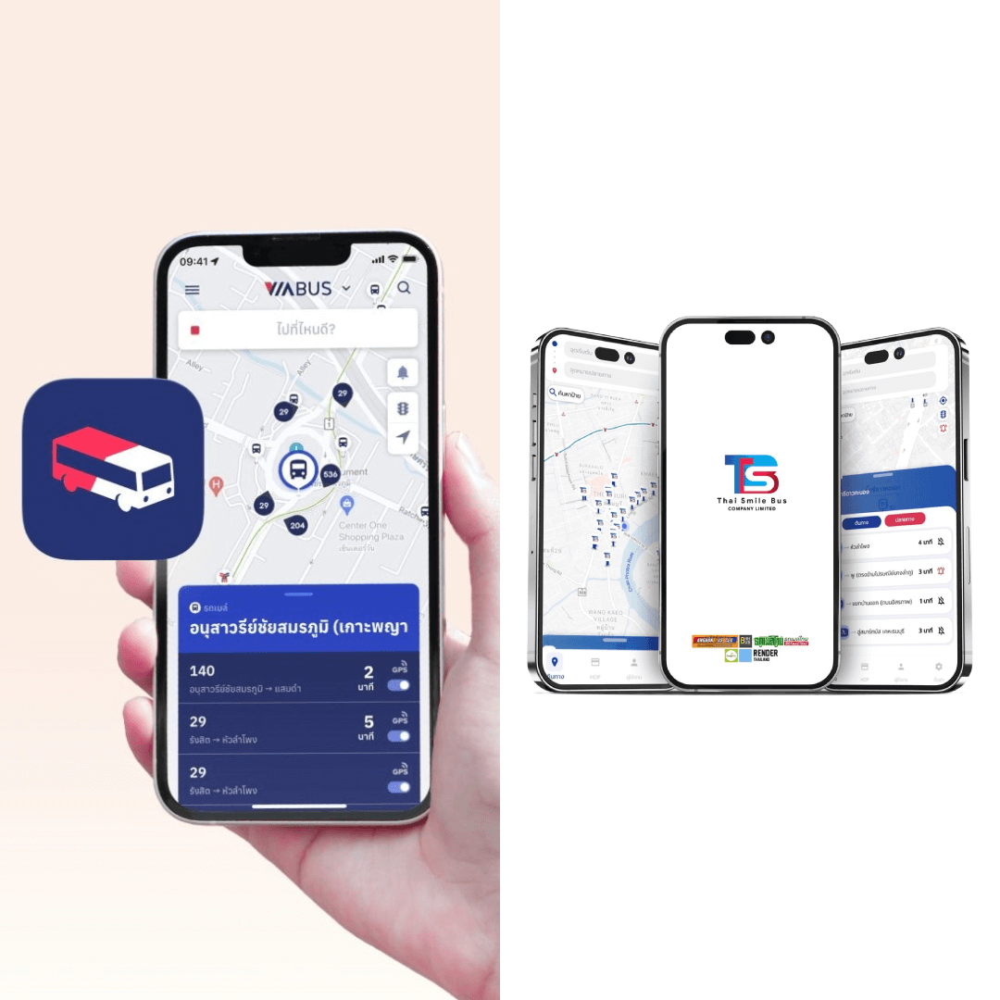

จะรู้ได้ไงว่าต้องนั่งสายไหน
ข้อมูลเส้นทางของสายต่าง ๆ สามารถหาได้จาก Google เลย แต่ผมจะขอแนะนำให้ใช้แอพ VIABUS และ TSB GO / TSB GO PLUS สองแอพนี้สามารถที่จะค้นหาเส้นทางและสายรถเมล์ที่ต้องขึ้นได้ และยังใช้ติดตาม GPS ของรถเมล์ได้อีกด้วย ทำให้ชีวิตของคนนั่งรถเมล์เป็นประจำสบายขึ้นมาก ๆ